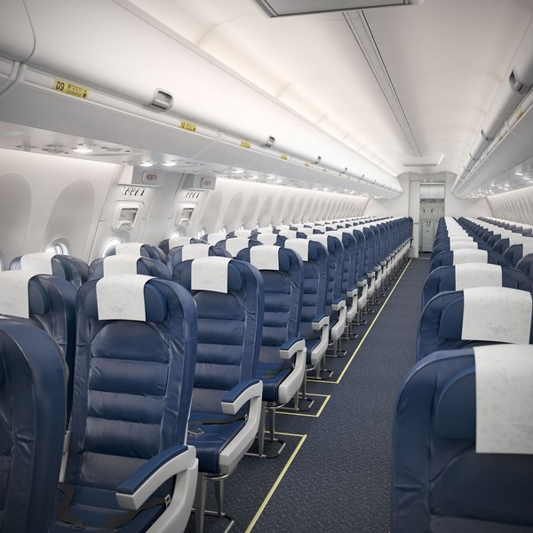
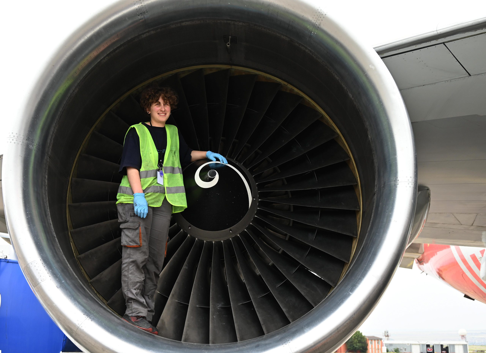
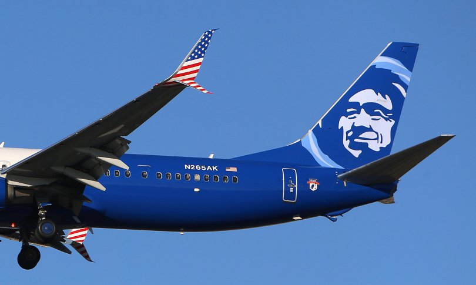
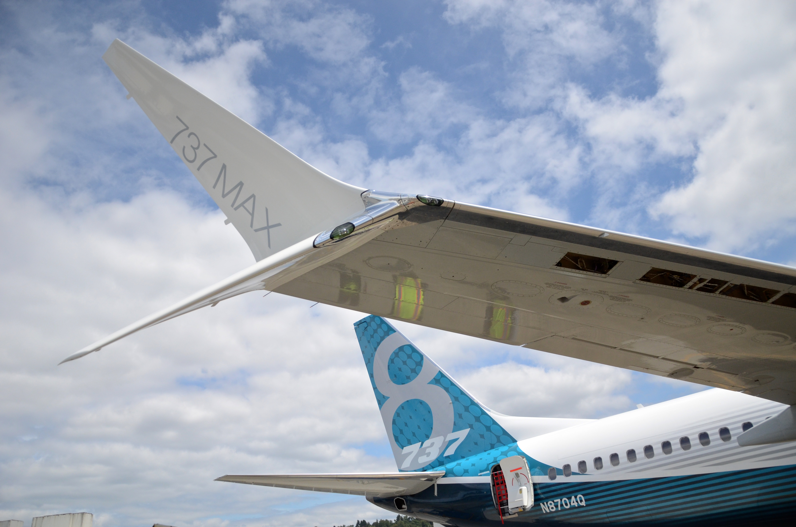
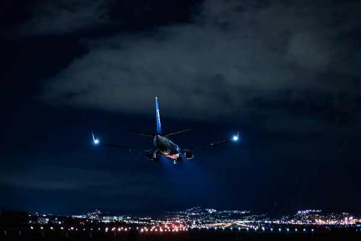
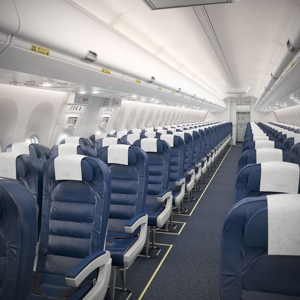
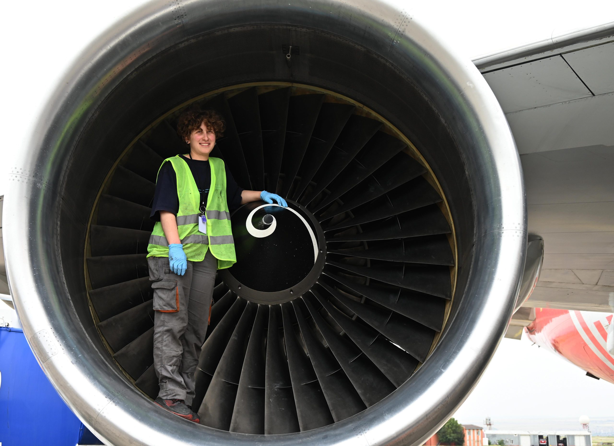
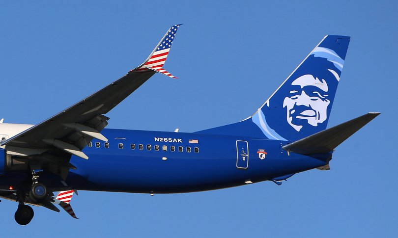
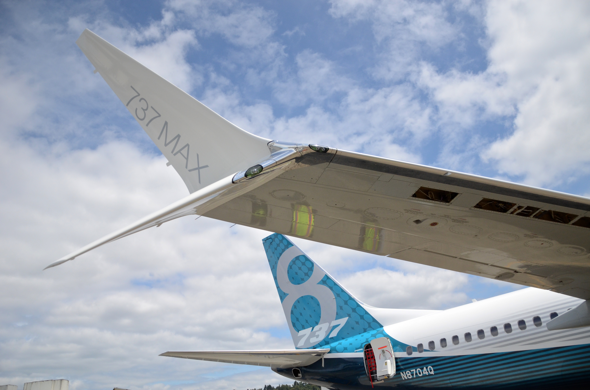
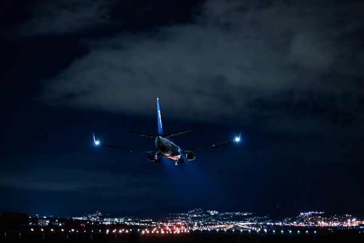

Boeing 737-ის ისტორია
Boeing 737 პირველად გაფრინდა 1967 წლის 9 აპრილს. ეს იყო მოკლე და საშუალო მანძილის ნარიგაციის თვითფრინავი, რომელიც სწრაფად გახდა მსოფლიოში ერთ-ერთი ყველაზე პოპულარული.
737-ის პირველი მოდელი - 737-100, შეიქმნა Lufthansa-სთვის. დღესდღეობით, Boeing 737 არის ყველაზე გაყიდვადი ჯეტლაინერი ავიაციის ისტორიაში.
ინოვაციური ტექნოლოგიები
737 MAX სერია აღჭურვილია:
- CFM International LEAP-1B ძრავებით
- ახალი ფრთების დიზაინით (Advanced Technology Winglets)
- მოწინავე ავიონიკით (Boeing Sky Interior)
- გაუმჯობესებული საწვავის ეფექტურობით (14% ნაკლები საწვავი ვიდრე წინა მოდელებში)
ტექნიკური სპეციფიკაციები
| პარამეტრი | 737-800 | 737 MAX 8 |
|---|---|---|
| სიგრძე | 39.5 მ | 39.5 მ |
| ფრთის შლილი | 35.8 მ | 35.9 მ |
| მაქს. აფრენის წონა | 79,015 კგ | 82,191 კგ |
| მგზავრების რაოდენობა | 162-189 | 178-200 |
| სიჩქარე | Mach 0.785 | Mach 0.79 |
გალერეა
 








